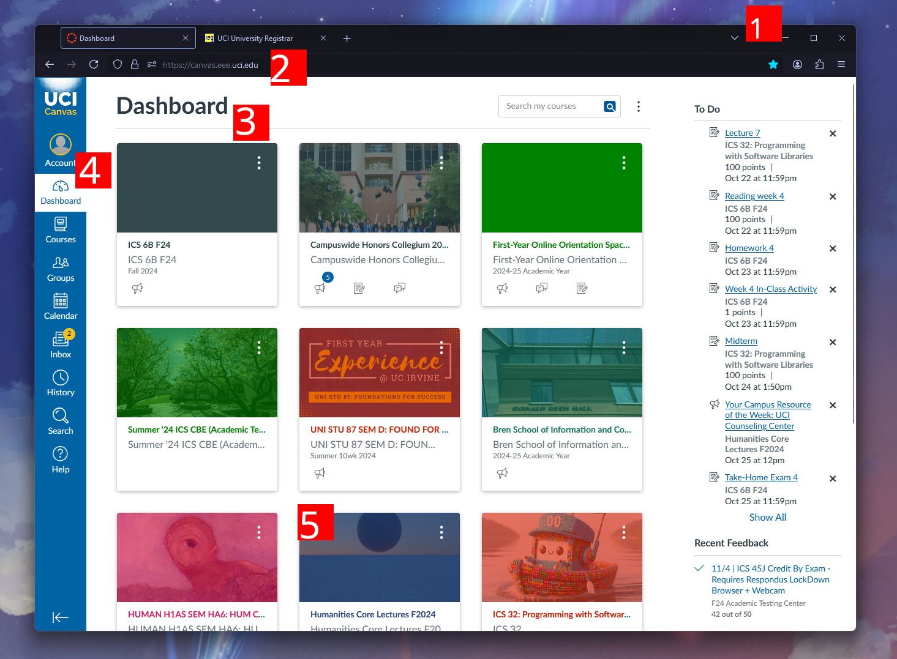

Caden Lee's Digital Archive
W O R L D B U I L D I N G - 2 0 2 4
# The Decameron (2024/11/04)
Boccaccio's Decameron, written in the 14th century after the 1348 pandemic, describes a group of seven women and three men who have ran from the plague-infested city of Florence to the countryside. During their time there, they tell tales to each other. Within those tales--and within the book as a whole--Boccaccio argues for the importance of imagination, creativity, and other human qualities and experiences, rather than the divine, religious subjects of his contemporaries.
To outline his system in the preface, he speaks from the point of view of the book's Author:
My plan is to recount one hundred stories, or fables, or parables, or histories, or whatever you wish to call them. [...] In reading them, the ladies of whom I have been speakingThe Author claims to sympathize with women, aiming to save them when they have nothing else to do inside their homes will be able to derive not only pleasure from the entertaining material they contain, but useful advice as well [...] and I believe that as they read them, their suffering would come to an end (4-5).

Rather than tell these stories outright, Boccaccio (speaking as the Author) presents them through the ten characters. Known as a pastoral setting, their idyllic countryside surroundings reflect his virtues and the world the group has built for themselves, as opposed to the much more grim outside world.
Similarly, he hopes that his audience will find escape and salvation in the literary world he creates.
Left (image 1): a 1916 painting of the brigata by John William Waterhouse
Similarly, he hopes that his audience will find escape and salvation in the literary world he creates.
Left (image 1): a 1916 painting of the brigata by John William Waterhouse
# Nested Storytelling
Boccaccio's system creates a multi-layered framework that characterizes the Decameron's storytelling.
Hover over the boxes to display the layers, as they are revealed to us in the book, and the corresponding worlds they take place in:
The Decameron as the tale the reader experiences
The tale told by the Author about the Decameron
The world where Boccaccio lives
The tale told by the Author about society during the plague
The world of Ladies whom the Author wants to console
The tale told by the Author about the group
The world of a society devastated by plague
The tales told by the group
The idyllic world of the group
(Sometimes) the tales told inside those tales
The world represented in the tales
(Source for the info in the above model: Professor Shemek's 2024 Humanities Core Lecture 1)
# Layered Worlds: the University Campus
Boccaccio's work reflects one way that we design and categorize spaces. Similar to how the Decameron is just a sequence of words but contains a multi-dimensional structure, the universe we live in is relatively flat and continuous but can be split into nested layers. Each of these could be seen as its own world, with its own attributes, histories, and purposes.
➡️ Narrower world
Wider world ➡️
UCI's campus, a setting relatively isolated from the outside world
Certain parts of campus have specific roles, like how the Science Library area is for studying and research
The Middle Earth Laurelin-Telperion housing, where I live
My hall, a specific floor of the towers
My desk in my room, which I designed to fit my personal life
When deciding whether UCI is an isolated, pastoral world of its own or a liminal space, I think of it like reading the Decameron : each sub-world I inhabit is practically cut off from the outside until I leave. Going from my room to the library is like switching chapters, and taking a weekend trip off campus is like closing the book, leaving the stories for when I return.
# Layered Worlds: Digital Spaces
This style of categorization is especially apparent to us when we use computers--the design of graphical user interfaces heavily employs visual distinctions between layers for navigation. For instance, every UCI undergraduate uses the Canvas learning management system, as seen in the image:

1. An application window, as the name suggests, visually separates its view of the program's inner world from the surrounding desktop
2. Most web browsers use tabs, each of which contains a different website's world
3. In Canvas, the page is split into various regions, like the Dashboard and the To Do list
4. As a liminal space, the Dashboard displays a list of courses (similar to Boccaccio's frame for presenting stories)
5. The entire world of each course visually resides within its corresponding box, waiting to be clicked
Left: the Canvas learning management system used by UCI, as of 2024
2. Most web browsers use tabs, each of which contains a different website's world
3. In Canvas, the page is split into various regions, like the Dashboard and the To Do list
4. As a liminal space, the Dashboard displays a list of courses (similar to Boccaccio's frame for presenting stories)
5. The entire world of each course visually resides within its corresponding box, waiting to be clicked
Left: the Canvas learning management system used by UCI, as of 2024
Image credits (in order, starting with image 1):
1. A Tale from the Decameron, by John William Waterhouse in 1916
All images or screenshots without numbers were taken by me on the UCI campus in 2024
Quotes:
Boccaccio, Giovanni. The Decameron (Norton Critical Edition). Edited and translated by Wayne A. Rebhorn. Norton, 2016.
1. A Tale from the Decameron, by John William Waterhouse in 1916
{kind=link}
All images or screenshots without numbers were taken by me on the UCI campus in 2024
Quotes:
Boccaccio, Giovanni. The Decameron (Norton Critical Edition). Edited and translated by Wayne A. Rebhorn. Norton, 2016.
All code (software and associated documentation files) is © 2024 Caden Lee under the MIT license (source).
Analysis on this digital archive is written by Caden Lee, unless stated otherwise.
All referenced works (images, websites, quotes, etc.) not by me belong to their respective creators and are used here for commentary and educational purposes.
Last updated: 2024/11/05
All referenced works (images, websites, quotes, etc.) not by me belong to their respective creators and are used here for commentary and educational purposes.
Last updated: 2024/11/05